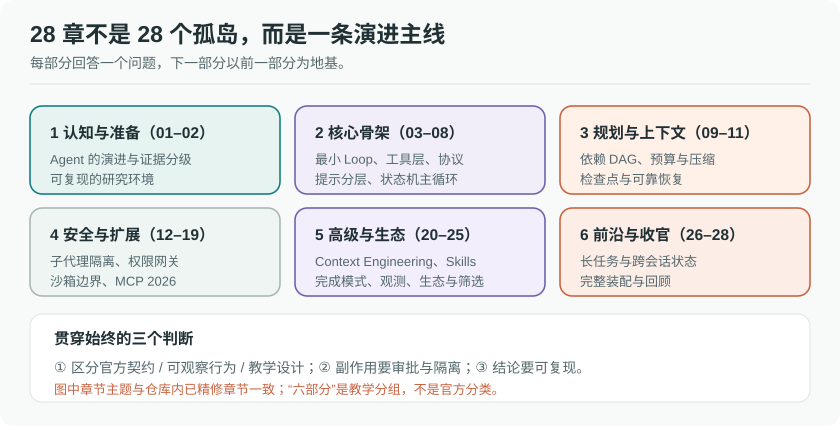
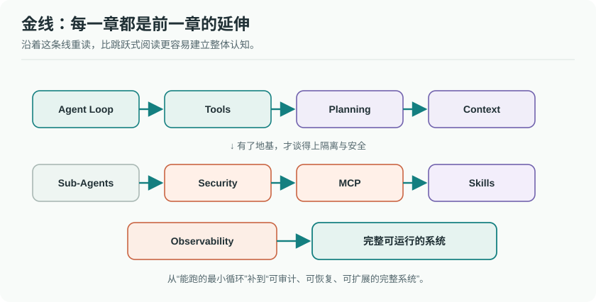

总结与展望：从最小循环到完整系统
回望 28 章的演进主线与核心模式，给出可继续深入的方向与贡献入口，并诚实地标出哪些结论只属于教学示例。
28 章知识图谱：六个部分，一条主线
整门课可以归为六个部分，每部分回答一个核心问题。下图与仓库里已精修的章节主题一致：

沿金线重读：从最小循环到完整系统
如果只记一条线，就记这条：主循环 → 工具 → 规划 → 上下文 → 子代理 → 安全 → MCP → 技能 → 可观测性 → 完整系统。每一环都以前一环为地基。重读时沿这条线走，比跳跃式阅读更容易建立整体认知。

核心设计模式速查表
| 模式 | 解决的问题 | 关键要点 | 章节 |
|---|---|---|---|
| Agent Loop | 模型如何自主决策并行动 | 读 stop_reason 决定继续或结束，循环有界 | 03 / 08 |
| Tool Registry | 解耦工具定义与调用 | 受保护的工作区工具，参数校验优先 | 05 / 06 |
| Task DAG | 把模糊任务变成可执行步骤 | 外部工作记忆，依赖关系显式化 | 09 |
| Checkpoint / Resume | 上下文溢出与中断后如何继续 | 预算预警 + 结构化检查点 + 可恢复 | 10 / 11 |
| Sub-Agent 隔离 | 并行子任务互不干扰 | 委派契约 + 多重隔离，结果合并与失败回收 | 12 / 13 |
| 权限网关 | 副作用如何控制 | 拒绝优先、逐请求审批，权限文本非授权 | 15 / 16 |
| 沙箱边界 | 越权执行的真正防线 | OS 级隔离，字符串过滤不是沙箱 | 17 |
| MCP 命名空间 | 多服务器工具如何不冲突 | 逐请求元数据、Schema 校验、外部授权 | 18 / 19 |
| 按需知识加载 | 领域知识如何进入上下文 | 发现只读元数据，命中才注入，预算截断 | 14 / 21 |
| 完成模式 | 何时算“做完” | 有界轻推，完成判定与“停止”分开 | 22 |
| 可观测性 | 失败如何被追踪 | 三层日志、token 归因、时间线 | 23 |
这些模式之间有组合关系：长任务依赖 Checkpoint/Resume；子代理隔离需要权限网关兜底；MCP 通过 Tool Registry 暴露给主循环。理解交互比单独背模式更重要。
你还能往哪走
下面只列方向与起步动作，不给随版本变化的模型名或时间承诺：
- 视觉/桌面操作：让 Agent 看屏幕、定位 UI 元素。从官方计算机使用能力的参考实现入手，但注意其安全风险远高于文本操作。
- 多代理协作：把临时子代理升级为持久代理，通过标准协议通信；难点在授权与状态一致性。
- 小模型专用化：用小数据微调小模型降低延迟与成本；难点在评估与数据质量，不在训练脚本。
- 生产部署：把 Agent 封装为服务，处理并发、认证、资源隔离与用量计量。
无论哪个方向，验收方式都一样：在固定任务集上度量质量与成本，而不是相信任一方的宣传指标。
开源贡献的四个入口
- 写一个 MCP 服务器：对接一个数据库或开发工具。门槛低、用户价值高，但必须处理好授权与最小权限。
- 贡献 SDK / 工具：从文档修正与可复现的 bug 报告开始，再到小型 PR。一个信息完整的 bug 报告本身就有价值。
- 写文档与教程：把你踩过的坑写成可复现的步骤；中英双语的准确性尤其珍贵。
- 公开你的验证结果：把“我在什么版本、什么任务集上测到了什么”写出来，这比任何观点都有说服力。
最好的学习方式是教别人
试着把你搭建 Agent 的过程写成一篇可复现的帖子。你会发现自己以为懂了的地方，其实还没完全理解。
Agent 时代工程师的四项素养
- 系统设计思维：Agent 会写代码，但不替你决定取舍——缓存怎么配、一致性如何保证、边界在哪里。
- 评估与测试：“如何知道 Agent 做对了”会成为日常。不能因为输出了“done”就相信任务完成。
- 上下文与提示设计：写系统提示像写代码（精确、结构化），也像与人沟通（理解注意力与偏差）。
- 安全思维：Agent 一分钟能执行几十个命令。权限最小化、变更审计、回滚能力、沙箱隔离都是门槛，不是可选项。
致谢与告别
28 章，从 Agent 的演进到 Harness 架构，再到亲手装配一个完整可用的 Agent。真正的收获不是“会调 API”，而是“会建系统”：工具协议、权限与沙箱、上下文预算、子代理隔离、可观测性——这些才是可迁移的能力。
请把一句话带走：模型会不断换代，但 Harness 的设计与验证方法是你能长期持有的资产。这不是终点，是你 Agent 工程工作的起点。
资料与口径
- Claude Code: Overview — 产品能力一手说明
- Anthropic: Tool Use overview — 工具循环与协议基础
- Anthropic: Prompt Caching 与 Context Editing — 上下文成本与清理
图 1、图 2 为教学示意；“六个部分”“金线读法”是本课教学分组，不是官方分类。本章不引用无法核实的项目名、论文编号与性能百分比。